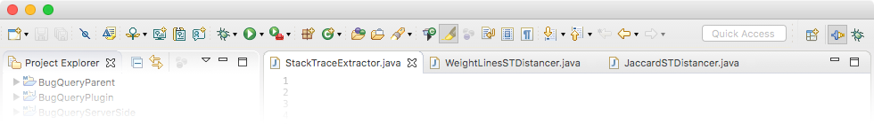
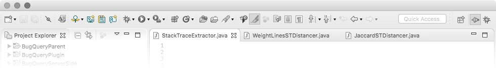

This guide provides the essential information you can use to debug your code with BugQuery. It describes in detail the services BugQuery offers online and as a plug-in for Eclipse.

BugQuery's Eclipse plug-in collects your program's stack trace, and helps you debug by automatically finding a relevant solution online, using BugQuery's index.
This section will help you install the plug-in, and teach you how to use it.
To use this plug-in you must have Eclipse installed on your machine. The plug-in is supported in Eclipse Neon, which you can download from the Eclipse Foundation website.
To download the latest version of the BugQuery plug-in itself, please
visit BugQuery's
GitHub repository. Locate and download
BugQuery.jar
, then move it to the folder named
dropins
in your Eclipse installation directory. If Eclipse is open, you'll
need to restart the workspace for changes to take effect.
First, locate BugQuery's toolbar in the Eclipse toolbar. Click the arrow next to the main icon () to open the drop-down menu, which lists several stack trace extraction methods supported by the plug-in.

To debug your program with BugQuery, select the method you prefer from the drop-down menu, or click the matching button in the toolbar. The plug-in will then use that method to retrive the stack trace (which includes the details of your execution), and search our database for a solution. The results will be presented in your default browser.
With the BugQuery plug-in installed, you can choose from this selection of stack extraction methods:
Extract the trace from console output. After an unsuccessful
execution in Eclipse, the BugQuery plug-in can automatically
isolate your program's stack trace from the console output. Extract
the trace using this method by selecting
Trace from Console
from the drop-down menu, or by using the keyboard shortcut
ctrl+6
(or
⌘+6
in macOS). You can also click on the command's icon () in the toolbar.
Input the trace yourself. If other methods fail, you can
always initiate a BugQuery search with your own input. Add your
query (your stack trace) to the system clipboard using your default
copy or cut, and select
Trace from Clipboard
() from the
BugQuery toolbar. Alternatively, pick
Trace from User Dialog
() , and insert
your query in the window that opens up. Click OK and you are set.
You don't have to worry about formatting or adding unnecessary
information - the plug-in faithfully extracts the important parts
of your input.